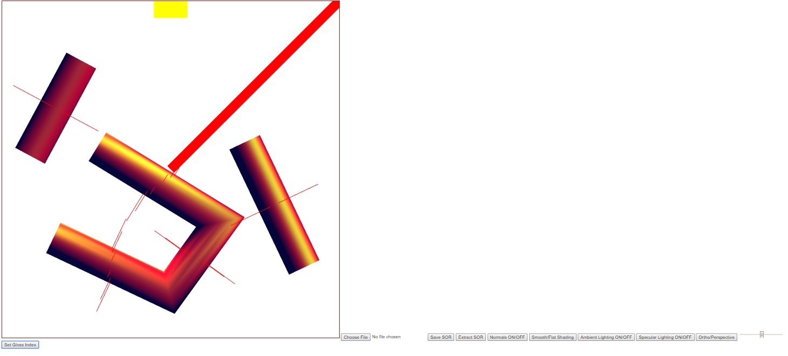

Name: Stephen Woodbury
Student ID: 1429496 : swoodbur
Submission For: Lab3
Date: 11/14/2017
Files Included: WoodburyStephenProg3Features.html, WoodburyStephenProg3Driver.html, WoodburyStephenProg3Driver.js, WoodburyStephenProg3Output.jpg
Assignment Details: Take Lab3, Allow for Transformations
Additional Features: None
Notes: Modularizing my code took time. I did as much as I could in the time limit. I finished just about everything. The only things that doesn't Perform as specified is rotation. It rotates just fine, but the lighting doesn't change. I need to fix that. I also need to clean up my code to Make things more efficient. Please don't dock me too hard on rotation stuff for the grade. I have been working on this nonstop since thursday and Have even skipped classes to work on this. This took so much time because I didn't utilize cuon matrix functions as well as I should have and I had to rewrite the program from the ground up for modularzing. Thanks!
WoodburyStephenProg3Output: Multiple GC's
Link to Driver : WoodburyStephenProg3Driver.html